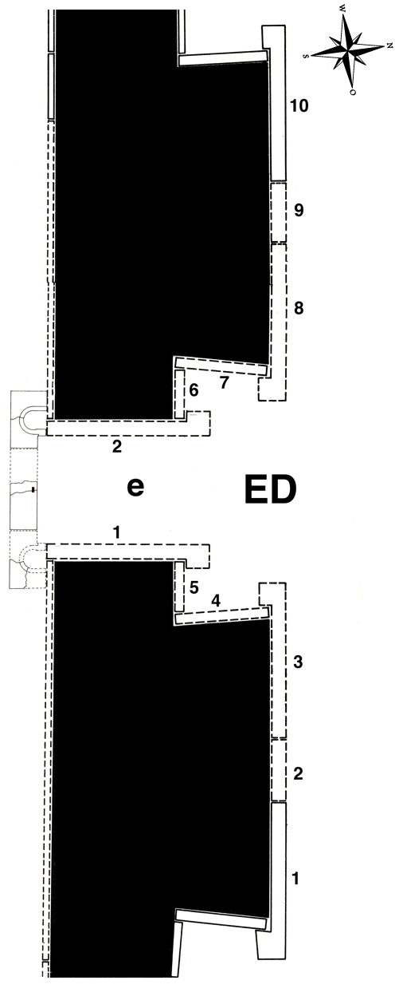

Room ED
Like “chambers” D and E (as identified by Layard) ED was not really a room, but the middle part of the outer facade of the throne room,facing an open courtyard, which (together with ED) had been eroded by a ravine in relatively recent times. Mallowan, in his 1953 excavations, discovered that the courtyard connected the throne room with another wing of the palace further to the north and was surrounded by subsidiary rooms, as, for example, a guardroom (EC).
Two lamassu bulls are all that remains of this part of the façade. Layard describes what he found: “On the edge of the ravine, to the north of chamber B, ... I discovered two enormous winged bulls, ... which had fallen from their places. They did not form an entrance, but each one stood alone, adjoining the great slabs with the colossal winged figures in chambers D and E. I was unable to raise them, and the sculptured face of the slab was downward. They had evidently been long exposed to the atmosphere, and the heads had been greatly injured" (Nineveh I p. 88). Both were raised and restored in situ by the Iraqi Antiquities Service.
Click on ED in the middle of the room to see all panels positioned in their respective walls, or on the individual panels along the inner walls and in the entryways to go to CDLI pages associated with them.
 |
Relief Slabs by Collection
Nimrud, Iraq |